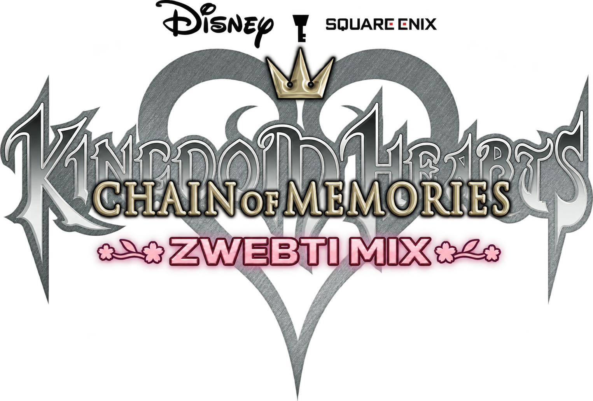

Windows action edition · 0.10.1

Kingdom Hearts Chain of Memories:
Zwebti Mix
Three normal attacks lead into a contextual finisher. Use direction, hold timing and the current magic element to branch. Original multi-hit animations, screen darkening and native effects remain part of the move.
Standard controller
| Left stick | Move and choose branch direction |
| South · A / Cross | Attack / fourth-hit finisher |
| East · B / Circle | Jump |
| West · X / Square | Dodge |
| North · Y / Triangle | Guard while held |
| LB / RB | Previous / next magic |
| RT | Cast; hold to charge |
| LT | Elemental / advanced modifier |
| Right-stick click | Call an earned assist |
| D-pad left / right | Select assist character |
| D-pad up / down | Change Keyblade |
Face-button names above use Xbox / PlayStation conventions. Bindings remain adjustable in Options. Combat controls are kept out of the battle HUD.
Three attacks, then choose the finisher
South → South → South → Branch
The first three attacks always play. Repeated presses queue one next action; they cannot restart a swing or skip a finisher phase.
| Fourth input | Tap | Hold |
|---|
| Neutral | Blitz | Ars Arcanum |
| Toward opponent | Sliding Dash | Sonic Blade |
| Away | Strike Raid | Zantetsuken |
| Stick up | Ragnarok |
| Stick down | Stun Impact |
| Airborne | Air Rush / Sonic Blade |
A hold crosses its first branch at about 0.2 seconds; release or keep holding to commit. Ground-only moves wait for landing. Normal attacks allow immediate defense; finishers keep their committed attack phases.
Magic connects the tree
LB / RB changes the current element. RT casts its normal spell: tap for the base spell, hold about 0.2 seconds for the next tier, or about 0.5 seconds for the strongest tier. LT changes the finisher or opens an advanced spell branch. Aqua Splash keeps its elevated spray and left-stick steering.
Assists join the fight
Land attacks and precise dodges to fill the small gold gauge near Sora’s portrait. Once full, right-stick click calls the selected character. Sora stays visible and can keep attacking, moving, guarding and rolling. Releasing the click quickly gives a fast call; holding gives more of the character’s original native sequence. One character name represents the whole family.
SimbaGenieBambiDumboTinker BellMushuCloudDonaldGoofyAladdinArielJackPeter PanBeast
D-pad left / right changes that selection. LT + right-stick click calls the special cooperative variant for Bambi, Cloud or Donald; other characters keep the ordinary tap/hold branches. The gauge is spent when an assist actually arrives. Earned gauge and selections carry between battles in the current session.
The engine shares a native background-effect channel. Conflicting effects wait for a safe turn; Sora’s ordinary combat remains active. Trinity Limit also waits for an existing assist to leave before starting its original team sequence.
Start and saves
Open Kingdom Hearts Chain of Memories - Zwebti Mix 0.10.1.exe and choose Story or Practice Arena. Use your own supported USA game file. Story and Practice profiles remain separate; the updater retains the previous release.